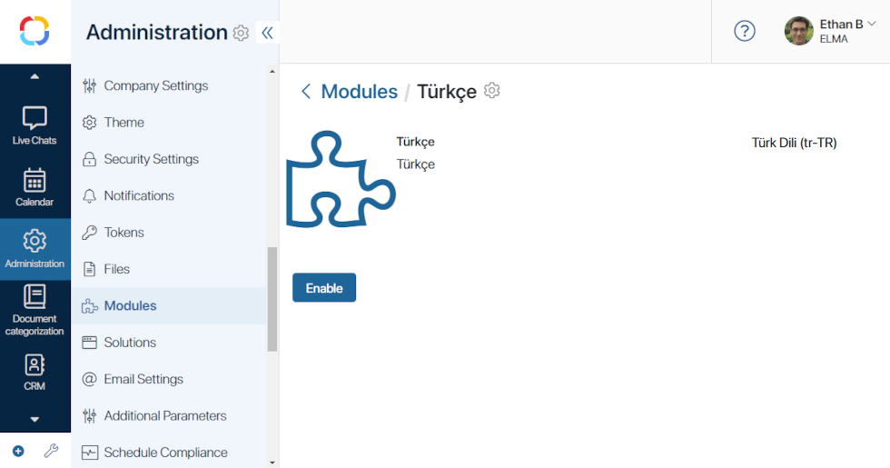
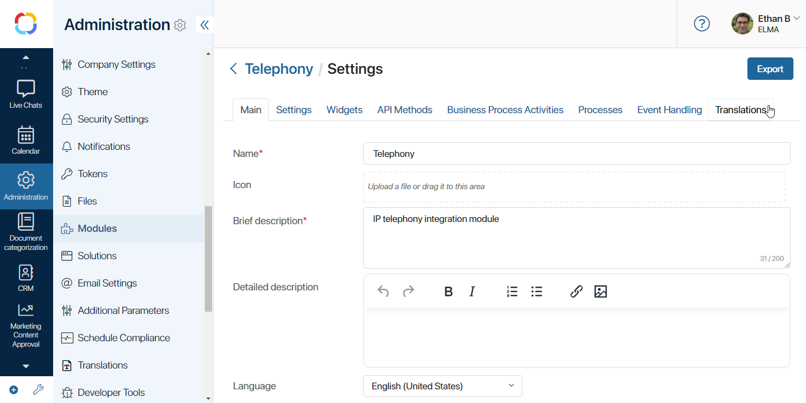
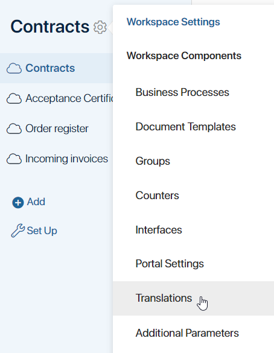
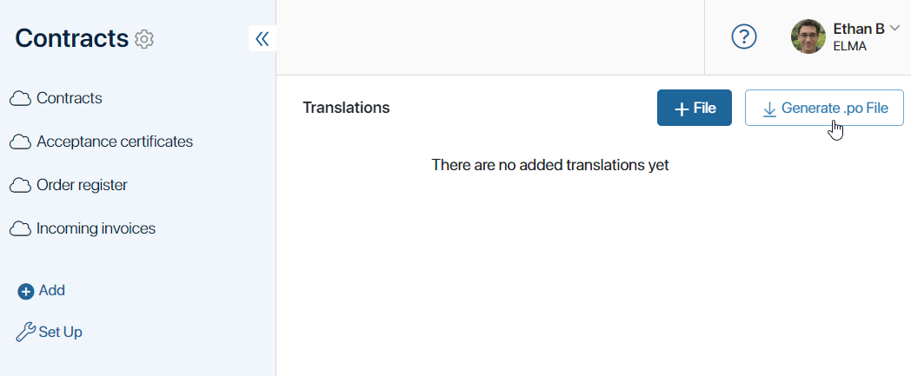
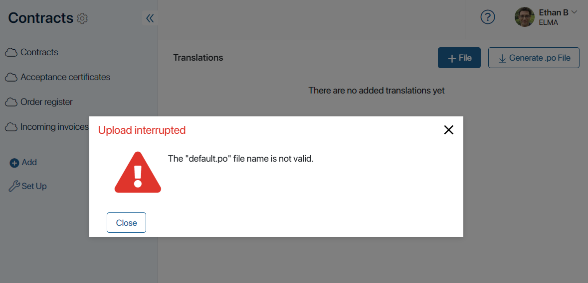
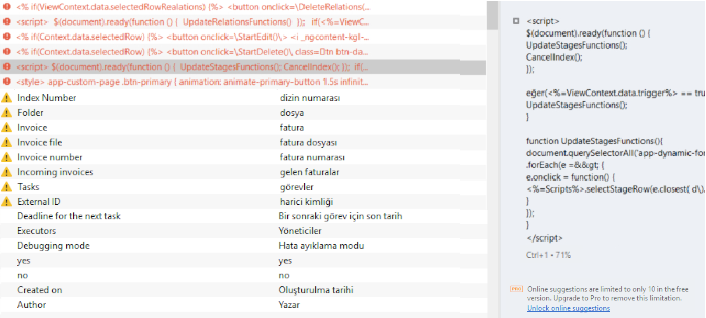
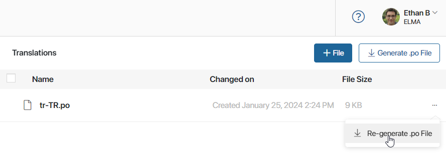
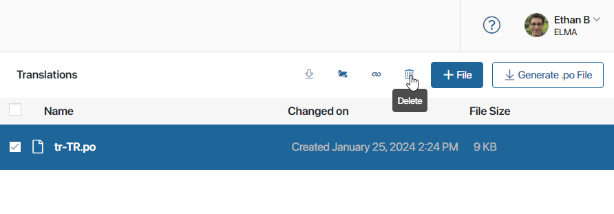

In BRIX, you can change the interface language in the locale settings and the user profile. You can use one of the supported languages. If your company or some of its users require an interface language that is not available by default, you can install an additional locale. To do this:
- Create and install a module of the Language package type for the new locale.
- Translate the custom configuration and built-in workspaces.
- Perform a check of the new locale.
If you want to change standard translations for default languages, follow the same procedure as for a new locale.
Create and install a language package
- Submit a request for a new locale to technical support.
The specialist forwards your request to the developer and provides you with:
- A list of .po files with resources for translation.
- A utility with instructions to create a Language package type module for the target locale from these files.
- Translate the received .po files using a specialized program, for example, Poedit.
- Create a Language package type module in the form of a .e365 file by running the utility as per the instructions.
- Check the proper functioning of the module.
- Install the module. If it contains incorrectly translated data, an error will occur during installation. In this case, check the translation in the .po files using a specialized program, such as Poedit.
- Enable the module.

Afterwards, in the company settings and in the user profile, it will be possible to switch the interface language to the new one. The name and code of the new language are set according to the module.
If the new locale is only needed for specific users, you don’t need to change the language in company settings.
- If you wish to update the locale, perform the steps indicated above again. New resources appear after each system update. Obtain .po files with new resources, add them to the module, and install it. Only one module per language can be used in the system, so the previously installed language package for the target locale will be replaced with the new one.
- After installing the locale, you can begin translating the user configuration. By default, the translation function is unavailable. Contact BRIX support to activate this option.
Please note that the built-in workspaces, such as CRM, Marketing, Live Chats, Projects, and System apps are not translated within a module. For a new locale, translate them in the same way as the custom configuration.
Translate a custom configuration
Custom modules, workspaces, apps, pages, widgets, and business processes are translated via resource export.
начало внимание
The configuration translation isn’t available by default. To activate this option, please contact BRIX technical support. If the translation function is enabled, the Translations option will appear in the settings of workspaces and custom modules.
конец внимание
To add resource translations, follow these steps:
- Open the Translations page in the system component settings:
- For custom modules, go to Administration > Modules, select the desired module, click Settings, and then open the Translations tab.

- For custom workspaces, navigate to the workspace page, click the gear icon next to its name, and select Translations.

Actions described further are the same for translating resources of modules and workspaces.
- Download a file with the resources of the current workspace or module to your PC. To do this, in the upper right corner of the Translations page, click the Generate .po File button.

- en-US.po for English (United States).
- en-UK.po for English (United Kingdom).
- tr-TR.po for Turkish (Turkey).
The .po file includes a list of the workspace’s original resources (msgid) and empty strings for their translation (msgstr). For example:
msgid "My legal entities"
msgstr ""
msgid "Legal entity"
msgstr ""
msgid "Name"
msgstr ""
msgid "Full name"
msgstr ""
msgid "Legal address"
msgstr ""
msgid "Actual address"
msgstr ""
- Open the downloaded .po file using a translation program, for example, Poedit. Translate the resources by filling in the empty strings in the file.
начало внимание
Translate resources in a specialized program to avoid possible errors.
конец внимание
We recommend saving .po files with completed translations locally on your PC. They may be useful in case of data loss, for example, after updating system workspaces.
- Upload the translation file back to the workspace or module. To do this, on the Translations page, click +File. Note that if the file name does not correspond with the locale code, an error will occur.

The translation will automatically apply if the user selects the corresponding interface language in the settings.
начало внимание
All functions of the Administration workspace are available only in the original language of the interface used when creating the company. To work in this workspace, the administrator needs to change the language to the original one in their profile.
конец внимание
- In this way, create and upload .po files for each locale used in your company.
Translation in scripts
In custom scripts, including scripts in the Code widget, use the SR object for translation with the method T(str: string): string.
Then, the string specified in the method will be added to the .po file of the section or module. Next, add the translation of this string to the .po file and upload the file with the target locale back to the workspace or module. If the user changes the locale in their profile settings afterward, the string will be translated to the value specified in the .po file.
Example of a script in the Code widget using the translation function:
<% if (true) { %>
You can delete this block after reading.
<br>
/* SR.T('comment') */
String translation: <%= SR.T('string 1') %>
<% } %>
The .po file will include the value string 1.
Check the new locale
If the locale is installed incorrectly, you will encounter errors such as an empty interface in workspaces, page loading issues, etc. To avoid this, perform a check. It is recommended to use incognito mode or a different browser for this purpose.
- Ensure that in the settings of workspaces and modules:
If you have imported a workspace or module from another company, check that its settings indicate the original interface language. By setting the original language before exporting, after importing into the target company, you will see it indicated by default in the settings.
- Verify that the new language is available for selection in the user profile settings.
- Set the new language in your profile and check the translation in workspaces.
Errors in locale installation and their causes
- Error: After a user changes the language in their profile, the page does not load. The error text in the console refers to the language package.
Standard reason for this error: The original language is not set in the workspace settings.
- Error: Empty workspace interface, the page hangs.
This may be caused by invalid translation of resources in the .po file. To avoid this, translate .po files using a specialized program, such as Poedit. Correct incorrect translations in this program as well.
Example of a .po file with errors, opened in Poedit:

- Code formatting error in the .po file.
This can be caused by incorrect use of double quotes. Follow these rules for their formatting:
- Double quotes can only be at the beginning and end of each translation string.
Example of code with an error:
msgid""
"text1\n"
"text2\n"
msgstr""translation1\n"translation2\n"
Example of correct code 1:
msgid""
"text1\n"
"text2\n"
msgstr"translation1\ntranslation2\n"
Example of correct code 2:
msgid""
"text1\n"
"text2\n"
msgstr""
"translation1\n"
"translation2\n"
- If double quotes are needed within the translation, they must be escaped with the \ character, for example:
msgstr "Add the \"Start\" button";
msgstr "Value = \"1\""
Other details of code formatting in the .po file:
- If the value of the
msgstrparameter is split into two lines, you can write it in one line. This will not cause an error. - The value of the
msgidparameter (translation key) cannot be changed. To avoid such errors as typos, extra spaces, case changes, etc., do not modify it. If these errors are present, the translation key may not be applied. - If there are special characters in the translation, they also cannot be changed. In this case, translate only the words.
Complete translation after adding new components
If you’ve made changes in a workspace, such as adding an app, you should supplement the translations in all .po files. To do this:
- In the settings of the workspace or module, navigate to the Translations page.
- To the right of each file’s name, click on the three dots and select Re-generate .po File. New resources with empty translations will be added to the .po files, while translations made earlier are retained.

- Download the .po files to your PC and add the new translations using a specialized translation program, for example, Poedit.
- Return to the BRIX interface and navigate to the Translations page. Select the outdated files using the checkbox and delete them.

- Click +File and upload the new .po files with full translation.